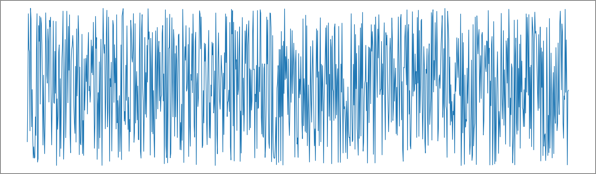
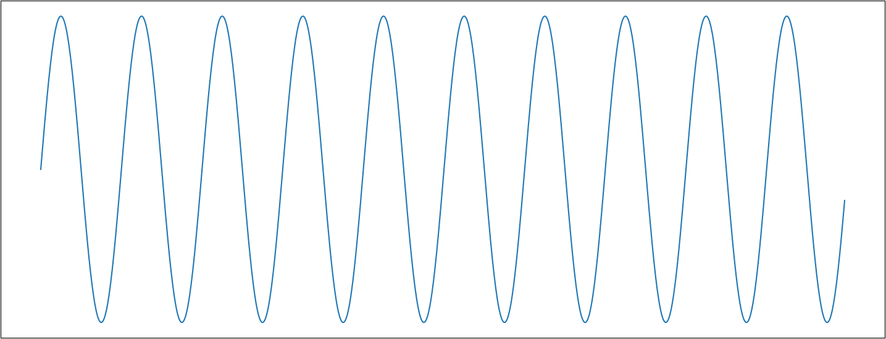
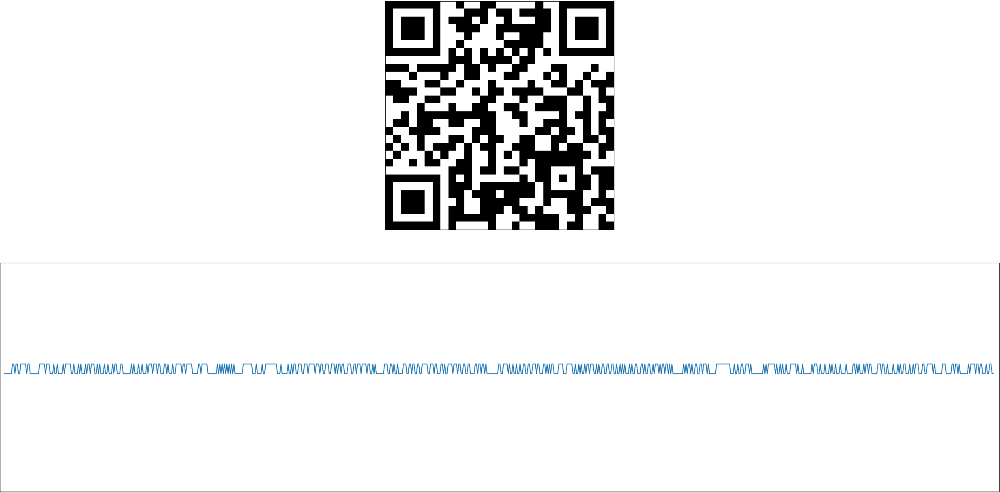
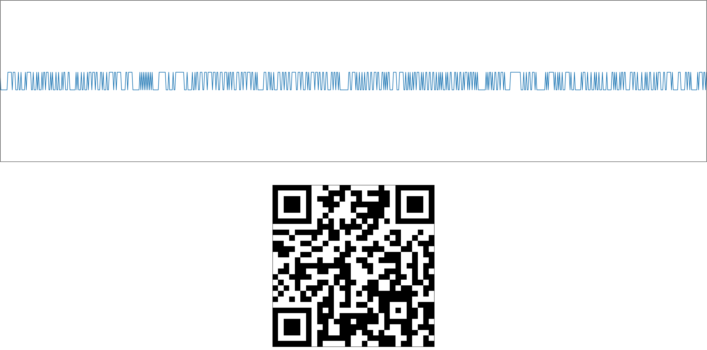
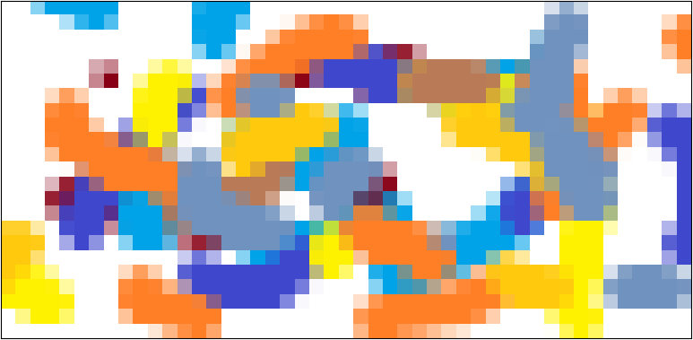
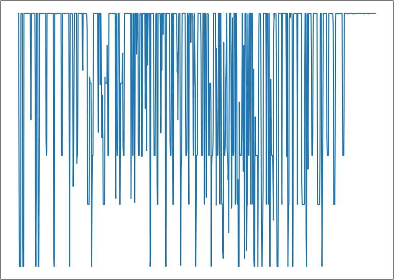

BMP2WAV Converter
Functions provided by the application and the technological capabilities that enable bidirectional conversion between image and sound data, their generation, and visualization.
Random Image Generation
Features
- The resolution is defined by the user using width and height in pixels.
- Color components (R, G, B) are generated independently for each pixel.
- Output format is 24-bit uncompressed BMP.
- Usage: The output image can be used as input for conversion to WAV or as a test file.
Command Line Parameters
py ./main.py -gb <width> <height> <output_path> [--show -s] [--show-with-axes -sx] [--test]Optional Flags
-s: Display the generated image.-sx: Display the image with axes.--test: Save the preview to the test folder.
Example Usage
py ./main.py -gb 100 100 ./content/media/out/random.bmp -sRandom Sound Generation
Features
- The duration is defined by the number of samples.
- Sampling rate: 44,100 Hz.
- Number of channels: 1 (mono).
- Bit depth: 32-bit per sample.
- Output format: WAV PCM (uncompressed).
Command Line Parameters
py ./main.py -gw <samples> <output_path> [--show -s] [--show-with-axes -sx] [--test]Optional Flags
-s: Display the waveform.-sx: Display the waveform with axes.--test: Save the preview to the test folder.
Example Usage
py ./main.py -gw 1000 ./content/media/out/random_wave.wav -sSine Wave Generation
Features
- Frequency is user-defined.
- Sampling rate: 44,100 Hz.
- Number of samples: user-defined.
- Channels: 1 (mono).
- Bit depth: 32-bit per sample.
- Output format: WAV PCM (uncompressed).
Command Line Parameters
py ./main.py -gw <samples> <output_path> -f <frequency> [--show -s] [--show-with-axes -sx] [--test]Example Usage
py ./main.py -gw 1000 ./content/media/out/sine_wave.wav -f 440 -sBMP to WAV Conversion
Features
- Supported BMP formats: 1-bit, 4-bit, 8-bit, 24-bit.
- Output WAV:
- Sampling rate: 44,100 Hz.
- Bit depth: 32-bit.
- Mono.
Command Line Parameters
py ./main.py --convert <input.bmp> <output.wav> [--show -s] [--show-with-axes -sx] [--test]Example Usage
py ./main.py --convert ./content/media/bmp/1bit.bmp ./content/media/out/1bit.wav -sWAV to BMP Conversion
Features
- Converts amplitude values back to RGB pixel values.
- Reconstructs the original image resolution.
Command Line Parameters
py ./main.py --convert <input.wav> <output.bmp> [-c width height] [--show -s] [--show-with-axes -sx] [--test]Example Usage
py ./main.py --convert ./content/media/out/1bit.wav ./content/media/out/1bit.bmp -sFile Data Visualization
 Command Line Parameters
py ./main.py -i <file.wav or file.bmp> [--show -s] [--show-with-axes -sx] [--test]Example Usage
py ./main.py -i ./content/media/bmp/24bit.bmp -s